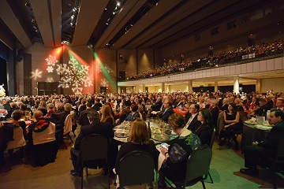
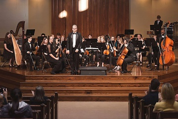
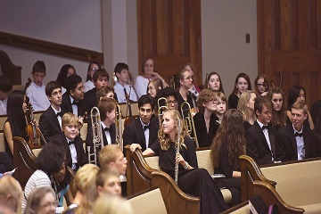
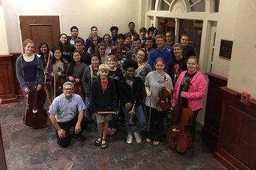

Upcoming Events
The Annual Holiday Pops Concert
December 3, 2016
Join the Jackson Symphony as they usher in the holiday season. Bring the whole family for a night of spirited seasonal classics.
See more »



Join JSYO
Reach out to our conductors and managers for a chance to join late in the season here. Find audition music and this year's audition dates here.
Read more »

About
The Mission of The Jackson Symphony and youth ensembles is to enrich the quality of life in West Tennessee through performances that incorporate a variety of musical styles in a welcoming atmosphere and through a broad spectrum of educational programs for people of all ages.